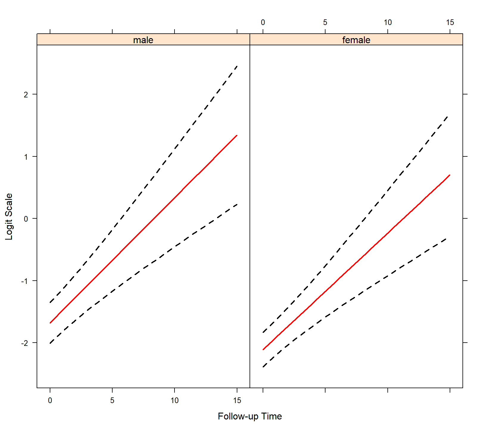
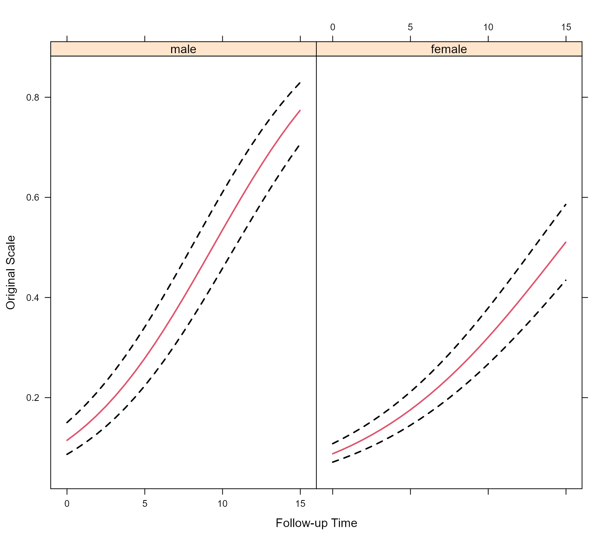

In addition to the standard family objects in R, function mixed_model() also allows for user-specified family objects to be given in its family argument. The minimum requirements are that user-specified family object is of class "family" and is a list with the following components:
family: a character string giving the name of the family.
link: a character string giving the name of the link function.
linkfun: a function that transforms the mean of the distribution of the outcome to the linear predictor scale.
linkinv: a function that is the inverse of the linkfun defined above.
log_dens: a function that returns the log of the probability density function or the log of the probability mass function of the distribution of the outcome given the random effects. This function should have exactly five arguments named, y the repeated measurements outcome, eta denoting the linear predictor (fixed + random effects), mu_fun the function to calculate the mean from the linear predictor (i.e., the linkinv function), phis a vector of possible extra dispersion/scale parameters, and eta_zi the linear predictor (fixed + random effects) for the logistic regression for the extra zeros; relevant in the cases of zero-inflated and two-part models. Even if phis and eta_zi may not be required, it should always appear as arguments of log_dens. Moreover, when the extra parameters phis are required, they should be appropriately transformed in order for the optimization of the log-likelihood to be unconstrained with regard to these parameters. Finally, log_dens should be fully vectorized with respect to eta and eta_zi. That is, for a numeric vector y and a numeric matrix eta, it should return a matrix with the log density evaluated at each column of eta, and likewise for eta_zi.
For the internal calculations the derivative of log_dens with respect to the linear predictor eta and extra parameters phis (when present) is also required. If it is not given, then it is approximated numerically using a central difference approximation. However, it greatly facilitates stability and speed if the user also specifies these functions. If the user specifies these functions, they should have the names score_eta_fun and score_phis_fun, respectively, and both of them have three arguments named y the numeric vector of the repeated measurements outcome, mu the numeric vector or matrix of the mean of the outcome and phis a numeric vector of the extra parameters.
We first illustrate the use of a custom-made family object in the case of a negative binomial repeated measurements outcome. We should note however that a family object negative.binomial() is already defined in the package and users could invoke this instead - for more info see the relative online help page for negative.binomial(). We start by simulating some data:
set.seed(101)
dd <- expand.grid(f1 = factor(1:3), f2 = LETTERS[1:2], g = 1:30, rep = 1:15,
KEEP.OUT.ATTRS = FALSE)
mu <- 5*(-4 + with(dd, as.integer(f1) + 4 * as.numeric(f2)))
dd$y <- rnbinom(nrow(dd), mu = mu, size = 0.5)Next we define a new family object for negative binomial data
my_negBinom <- function (link = "log") {
stats <- make.link(link)
log_dens <- function (y, eta, mu_fun, phis, eta_zi) {
# the log density function
phis <- exp(phis) # unconstrained optimization of 'phis'
mu <- mu_fun(eta)
log_mu_phis <- log(mu + phis)
comp1 <- lgamma(y + phis) - lgamma(phis) - lgamma(y + 1)
comp2 <- phis * log(phis) - phis * log_mu_phis
comp3 <- y * log(mu) - y * log_mu_phis
out <- comp1 + comp2 + comp3
attr(out, "mu_y") <- mu
out
}
structure(list(family = "user Neg Binom", link = stats$name, linkfun = stats$linkfun,
linkinv = stats$linkinv, log_dens = log_dens),
class = "family")
}And we fit the model
system.time(
fm1 <- mixed_model(fixed = y ~ f1 * f2, random = ~ 1 | g, data = dd,
family = my_negBinom(), n_phis = 1,
initial_values = list("betas" = poisson()))
)
#> user system elapsed
#> 4.84 0.00 4.85
fm1
#>
#> Call:
#> mixed_model(fixed = y ~ f1 * f2, random = ~1 | g, data = dd,
#> family = my_negBinom(), n_phis = 1, initial_values = list(betas = poisson()))
#>
#>
#> Model:
#> family: user Neg Binom
#> link: log
#>
#> Random effects covariance matrix:
#> StdDev
#> (Intercept) 0.2324253
#>
#> Fixed effects:
#> (Intercept) f12 f13 f2B f12:f2B f13:f2B
#> 1.6304869 0.6029562 1.0152191 1.5443873 -0.4410025 -0.5854637
#>
#> phi parameters:
#> -0.6549776
#>
#> log-Lik: -10018.89In the call to mixed_model() we specify the argument n_phis which lets the function know how many extra parameters does the distribution of the outcome have. In addition, we also specify that better quality initial values for the fixed effects betas can be obtained by fitting a Poisson regression model to the repeated measurements outcome (ignoring the correlations) with the same design matrix as the fixed-effects design matrix. For the unique elements of the random effects covariance matrix and for the extra parameters phis the default initial values are used.
In the output, the reported phi parameters is on the log scale, because in the definition of log_dens we specified that phis <- exp(phis).
As mentioned above, the internal computations are facilitated if the user also specifies the derivatives of the log density with respect to the linear predictor eta and the extra parameters phis. Hence, in the following we define a new negative binomial family object with these functions also defined:
my_negBinom2 <- function () {
stats <- make.link(link = "log")
log_dens <- function (y, eta, mu_fun, phis, eta_zi) {
# the log density function
phis <- exp(phis)
mu <- mu_fun(eta)
log_mu_phis <- log(mu + phis)
comp1 <- lgamma(y + phis) - lgamma(phis) - lgamma(y + 1)
comp2 <- phis * log(phis) - phis * log_mu_phis
comp3 <- y * log(mu) - y * log_mu_phis
out <- comp1 + comp2 + comp3
attr(out, "mu_y") <- mu
out
}
score_eta_fun <- function (y, mu, phis, eta_zi) {
# the derivative of the log density w.r.t. mu
phis <- exp(phis)
mu_phis <- mu + phis
comp2 <- - phis / mu_phis
comp3 <- y / mu - y / mu_phis
# the derivative of mu w.r.t. eta (this depends on the chosen link function)
mu.eta <- mu
(comp2 + comp3) * mu.eta
}
score_phis_fun <- function (y, mu, phis, eta_zi) {
# the derivative of the log density w.r.t. phis
phis <- exp(phis)
mu_phis <- mu + phis
comp1 <- digamma(y + phis) - digamma(phis)
comp2 <- log(phis) + 1 - log(mu_phis) - phis / mu_phis
comp3 <- - y / mu_phis
(comp1 + comp2 + comp3) * phis
}
structure(list(family = "user Neg Binom", link = stats$name, linkfun = stats$linkfun,
linkinv = stats$linkinv, log_dens = log_dens,
score_eta_fun = score_eta_fun, score_phis_fun = score_phis_fun),
class = "family")
}And we fit the model
system.time(
fm2 <- mixed_model(fixed = y ~ f1 * f2, random = ~ 1 | g, data = dd,
family = my_negBinom2(), n_phis = 1,
initial_values = list("betas" = poisson()))
)
#> user system elapsed
#> 1.80 0.00 1.82
fm2
#>
#> Call:
#> mixed_model(fixed = y ~ f1 * f2, random = ~1 | g, data = dd,
#> family = my_negBinom2(), n_phis = 1, initial_values = list(betas = poisson()))
#>
#>
#> Model:
#> family: user Neg Binom
#> link: log
#>
#> Random effects covariance matrix:
#> StdDev
#> (Intercept) 0.2324254
#>
#> Fixed effects:
#> (Intercept) f12 f13 f2B f12:f2B f13:f2B
#> 1.6304869 0.6029562 1.0152191 1.5443873 -0.4410025 -0.5854637
#>
#> phi parameters:
#> -0.6549775
#>
#> log-Lik: -10018.89We obtain almost identical results, but in half of the computing time in this example. Depending on the size of the data set, the gain in computing time when the derivatives for eta and phis are provided can be much more substantial.
We further illustrate the use of custom-made family objects by fitting a linear mixed model but with Student’s t distributed error terms. We start by simulating some data
set.seed(1234)
n <- 100 # number of subjects
K <- 8 # number of measurements per subject
t_max <- 15 # maximum follow-up time
# we constuct a data frame with the design:
# everyone has a baseline measurment, and then measurements at random follow-up times
DF <- data.frame(id = rep(seq_len(n), each = K),
time = c(replicate(n, c(0, sort(runif(K - 1, 0, t_max))))),
sex = rep(gl(2, n/2, labels = c("male", "female")), each = K))
# design matrices for the fixed and random effects
X <- model.matrix(~ sex * time, data = DF)
Z <- model.matrix(~ time, data = DF)
betas <- c(20.1, -0.5, 0.24, -0.05) # fixed effects coefficients
sigma <- 1.2 # scale parameter for the Student's t errors
D11 <- 1.5 # variance of random intercepts
D22 <- 1.2 # variance of random slopes
# we simulate random effects
b <- cbind(rnorm(n, sd = sqrt(D11)), rnorm(n, sd = sqrt(D22)))
# linear predictor
eta_y <- as.vector(X %*% betas + rowSums(Z * b[DF$id, ]))
# we simulate Student's t longitudinal data
DF$y <- eta_y + sigma * rt(n * K, df = 4)Following we define the custom-made family object for the Student’s t distribution:
students.t <- function (df = stop("'df' must be specified"), link = "identity") {
.df <- df
env <- new.env(parent = .GlobalEnv)
assign(".df", df, envir = env)
stats <- make.link(link)
log_dens <- function (y, eta, mu_fun, phis, eta_zi) {
# the log density function
sigma <- exp(phis)
out <- dt(x = (y - eta) / sigma, df = .df, log = TRUE) - log(sigma)
attr(out, "mu_y") <- eta
out
}
score_eta_fun <- function (y, mu, phis, eta_zi) {
# the derivative of the log density w.r.t. mu
sigma2 <- exp(phis)^2
y_mu <- y - mu
(y_mu * (.df + 1) / (.df * sigma2)) / (1 + y_mu^2 / (.df * sigma2))
}
score_phis_fun <- function (y, mu, phis, eta_zi) {
sigma <- exp(phis)
y_mu2_df <- (y - mu)^2 / .df
(.df + 1) * y_mu2_df * sigma^{-2} / (1 + y_mu2_df / sigma^2) - 1
}
environment(log_dens) <- environment(score_eta_fun) <- environment(score_phis_fun) <- env
structure(list(family = "Student's-t", link = stats$name, linkfun = stats$linkfun,
linkinv = stats$linkinv, log_dens = log_dens,
score_eta_fun = score_eta_fun, score_phis_fun = score_phis_fun),
class = "family")
}And we fit the model
fm <- mixed_model(y ~ sex * time, random = ~ time | id, data = DF,
family = students.t(4), n_phis = 1,
initial_values = list("betas" = gaussian()))
fm
#>
#> Call:
#> mixed_model(fixed = y ~ sex * time, random = ~time | id, data = DF,
#> family = students.t(4), n_phis = 1, initial_values = list(betas = gaussian()))
#>
#>
#> Model:
#> family: Student's-t
#> link: identity
#>
#> Random effects covariance matrix:
#> StdDev Corr
#> (Intercept) 1.4088
#> time 1.2078 -0.2160
#>
#> Fixed effects:
#> (Intercept) sexfemale time sexfemale:time
#> 20.0379657 -0.7142730 0.3414929 -0.1284271
#>
#> phi parameters:
#> 0.1451852
#>
#> log-Lik: -1823.892As was the case also for the negative binomial model, the extra phis parameter has been appropriately transformed to have an unconstrained optimization of the likelihood. Hence, the estimated sigma parameter is exp(fm$phis) = 1.156.
As a final illustration we show how a beta mixed effects model can be fitted, i.e., applicable in case of bounded repeated measurements outcomes. We start again by simulating some data:
set.seed(1234)
n <- 100 # number of subjects
K <- 8 # number of measurements per subject
t_max <- 15 # maximum follow-up time
# we constuct a data frame with the design:
# everyone has a baseline measurment, and then measurements at random follow-up times
DF <- data.frame(id = rep(seq_len(n), each = K),
time = c(replicate(n, c(0, sort(runif(K - 1, 0, t_max))))),
sex = rep(gl(2, n/2, labels = c("male", "female")), each = K))
# design matrices for the fixed and random effects
X <- model.matrix(~ sex * time, data = DF)
Z <- model.matrix(~ time, data = DF)
betas <- c(-2.2, -0.25, 0.24, -0.05) # fixed effects coefficients
phi <- 5 # precision parameter of the Beta distribution
D11 <- 0.9 # variance of random intercepts
D22 <- 0.3 # variance of random slopes
# we simulate random effects
b <- cbind(rnorm(n, sd = sqrt(D11)), rnorm(n, sd = sqrt(D22)))
# linear predictor
eta_y <- as.vector(X %*% betas + rowSums(Z * b[DF$id, ]))
# mean
mu <- plogis(eta_y)
# we simulate beta longitudinal data
DF$y <- rbeta(n * K, shape1 = mu * phi, shape2 = phi * (1 - mu))
# we transform to (0, 1)
DF$y <- (DF$y * (nrow(DF) - 1) + 0.5) / nrow(DF)Next we define the custom-made family object as in the case of the Student’s t distribution:
beta.fam <- function () {
stats <- make.link("logit")
log_dens <- function (y, eta, mu_fun, phis, eta_zi) {
# the log density function
phi <- exp(phis)
mu <- mu_fun(eta)
mu_phi <- mu * phi
comp1 <- lgamma(phi) - lgamma(mu_phi)
comp2 <- (mu_phi - 1) * log(y) - lgamma(phi - mu_phi)
comp3 <- (phi - mu_phi - 1) * log(1 - y)
out <- comp1 + comp2 + comp3
attr(out, "mu_y") <- mu
out
}
score_eta_fun <- function (y, mu, phis, eta_zi) {
# the derivative of the log density w.r.t. mu
phi <- exp(phis)
mu_phi <- mu * phi
comp1 <- - digamma(mu_phi) * phi
comp2 <- phi * (log(y) + digamma(phi - mu_phi))
comp3 <- - phi * log(1 - y)
# the derivative of mu w.r.t. eta (this depends on the chosen link function)
mu.eta <- mu - mu * mu
(comp1 + comp2 + comp3) * mu.eta
}
score_phis_fun <- function (y, mu, phis, eta_zi) {
phi <- exp(phis)
mu_phi <- mu * phi
mu1 <- 1 - mu
comp1 <- digamma(phi) - digamma(mu_phi) * mu
comp2 <- mu * log(y) - digamma(phi - mu_phi) * mu1
comp3 <- log(1 - y) * mu1
(comp1 + comp2 + comp3) * phi
}
structure(list(family = "beta", link = stats$name, linkfun = stats$linkfun,
linkinv = stats$linkinv, log_dens = log_dens,
score_eta_fun = score_eta_fun, score_phis_fun = score_phis_fun),
class = "family")
}And we fit the model
gm <- mixed_model(y ~ sex * time, random = ~ time | id, data = DF,
family = beta.fam(), n_phis = 1)
gm
#>
#> Call:
#> mixed_model(fixed = y ~ sex * time, random = ~time | id, data = DF,
#> family = beta.fam(), n_phis = 1)
#>
#>
#> Model:
#> family: beta
#> link: logit
#>
#> Random effects covariance matrix:
#> StdDev Corr
#> (Intercept) 0.7211
#> time 0.2324 0.3436
#>
#> Fixed effects:
#> (Intercept) sexfemale time sexfemale:time
#> -1.68278433 -0.43038935 0.20178943 -0.01401582
#>
#> phi parameters:
#> 1.382763
#>
#> log-Lik: 1482.694To depict the results of the model we create an effects plot, showing the longitudinal evolution of the average/median male and female. We start by constructing the data frame that contains the values we want to depict, and using it in the effectPlotData() function; just for illustration, sandwich/robust standard errors are used in the calculation of the 95% poinwise cofidence intervals:
nDF <- with(DF, expand.grid(time = seq(min(time), max(time), length = 25),
sex = levels(sex)))
plot_data <- effectPlotData(gm, nDF, sandwich = TRUE)The figure is created with a call to xyplot() from the lattice package:
library("lattice")
xyplot(pred + low + upp ~ time | sex, data = plot_data,
type = "l", lty = c(1, 2, 2), col = c(2, 1, 1), lwd = 2,
xlab = "Follow-up Time", ylab = "Logit Scale")
expit <- function (x) exp(x) / (1 + exp(x))
xyplot(expit(pred) + expit(low) + expit(upp) ~ time | sex, data = plot_data,
type = "l", lty = c(1, 2, 2), col = c(2, 1, 1), lwd = 2,
xlab = "Follow-up Time", ylab = "Original Scale")